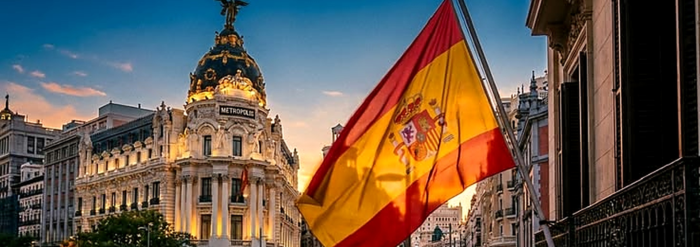
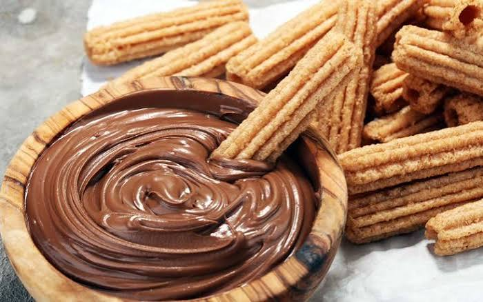
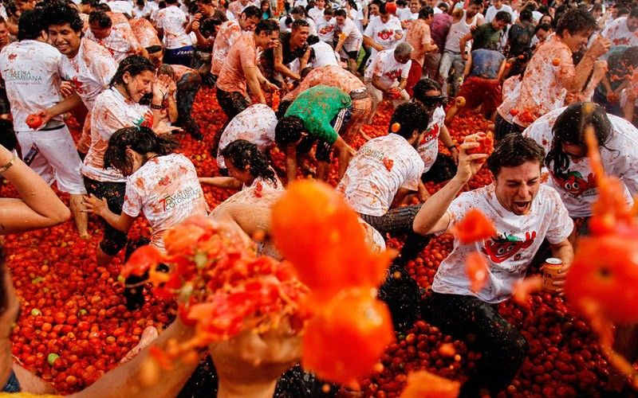
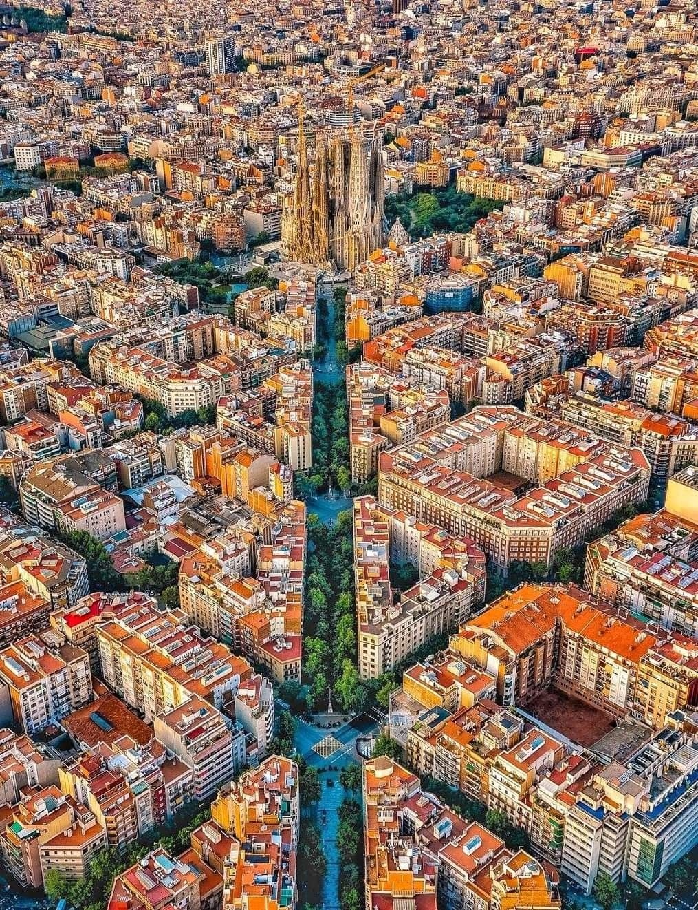

Jelajah Negara
Kenalan dengan budaya dari 4 negara pilihan.

 Spanyol
Spanyol
Madrid • Bahasa Spanyol • Euro
Spanyol berada di Semenanjung Iberia, Eropa bagian barat daya. Negara ini terkenal dengan flamenco, sepak bola, arsitektur unik, dan kehidupan malam yang hidup. Bahasa Spanyol dipakai ratusan juta orang di dunia, ditulis dengan huruf Latin plus tambahan seperti ñ dan tanda aksen.
Sapaan: Hola - belajar kosakata lainnya →

Churros dan Tortilla Española
Churros adalah adonan goreng panjang yang renyah, biasanya dicelup ke saus cokelat kental. Tortilla española adalah omelet tebal dari telur dan kentang yang bisa dimakan hangat maupun dingin.

La Tomatina
La Tomatina adalah festival perang lempar tomat massal yang diadakan tiap tahun di kota Buñol. Ribuan peserta saling melempar tomat sampai jalanan penuh warna merah.

Barcelona yang Tertata Rapi
Distrik Eixample di Barcelona ditata sangat simetris. Blok-blok bangunannya berbentuk persegi dengan sudut dipotong, sehingga tiap perempatan terlihat seperti segi delapan, dirancang agar cahaya matahari dan sirkulasi udara masuk merata.